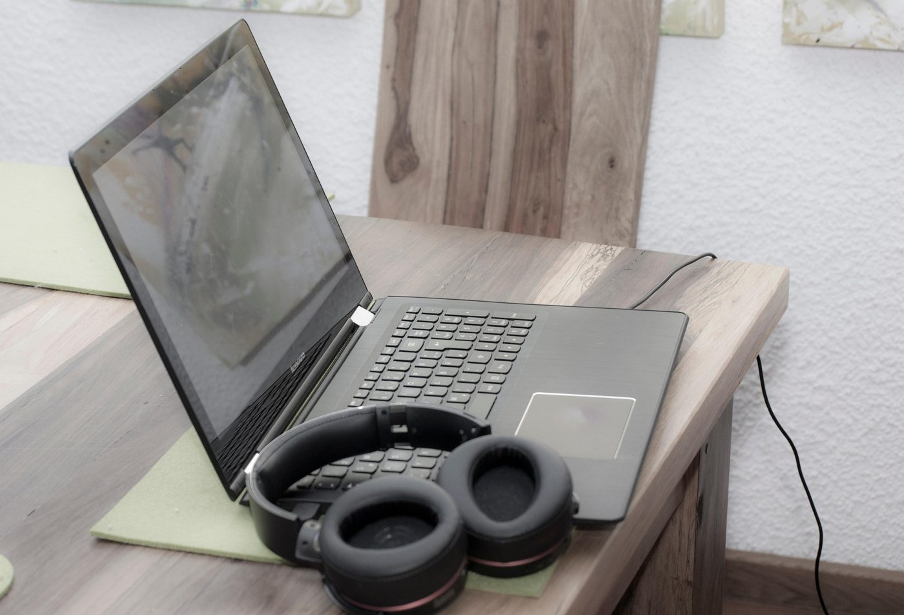
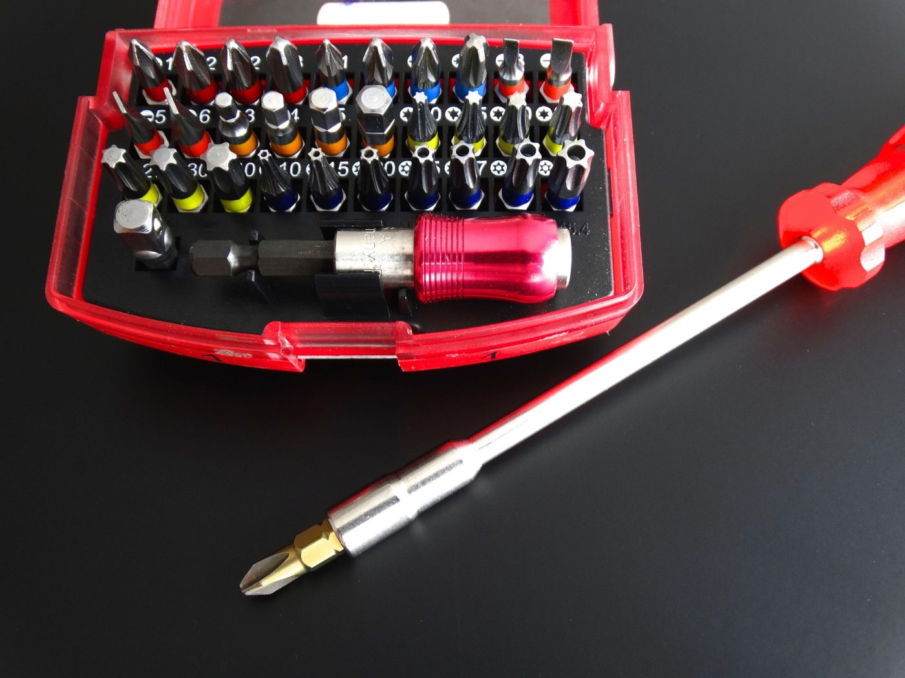

Cuidados para tu laptop
Su diseño compacto acumula calor y desgaste. Estas prácticas alargan su vida útil.
Ir al diagnóstico →Puntos clave
Revisa estos elementos con frecuencia.

Batería
Mantén la carga entre 20 % y 80 % y evita el calor extremo.

Ventilación
Úsala sobre superficies duras; una base con ventilador ayuda.

Teclado
Voltea y aplica aire comprimido; limpia con alcohol isopropílico.
Pantalla
Paño de microfibra ligeramente húmedo; nunca rocíes directo.
Limpieza paso a paso
- Apaga y desconectaRetira el cargador y la batería si es extraíble.
- Sopla las rejillas Aire comprimido en ráfagas cortas, sin inclinar la lata.
- Limpia superficiesMicrofibra con alcohol isopropílico al 70 %.
- Revisa temperaturas Con software de monitoreo; lo normal es menos de 85 °C en carga.
Temperatura y consumo
Entender lo que ocurre dentro del equipo.
Una laptop concentra procesador, tarjeta gráfica y batería en un espacio mínimo. Cuando la temperatura sube demasiado, el sistema reduce la velocidad del procesador para protegerse (thermal throttling), lo que se percibe como lentitud. Mantener las rejillas limpias y usar un plan de energía equilibrado ayuda a evitarlo.
Transporte y almacenamiento
Los golpes son una causa frecuente de daño.
- Usa una funda acolchada y no guardes objetos pesados sobre la laptop dentro de la mochila.
- Evita cerrar la tapa con objetos encima del teclado (cables, audífonos).
- Si la guardarás por semanas, déjala con 50 % de batería y en un lugar fresco y seco.
- Sujétala por la base, no por la pantalla, y evita abrir la tapa tomándola de una esquina.
Señales de alerta
- Batería que dura mucho menos o se hincha (deja de usarla y llévala a revisión).
- Ventilador siempre al máximo o apagados repentinos.
- Cargador o puerto de carga muy caliente o con holgura.
Herramientas necesarias
Herramientas recomendadas para el mantenimiento de una laptop.

Diagnóstico de la laptop
Descarta primero lo simple y avanza hacia lo complejo.
- Revisa la alimentación Prueba otro cargador y otra toma, observa el LED de carga y, si la batería es extraíble, enciende solo con el cargador.
- Observa el arranque Comprueba si aparece el logo del fabricante. Si no hay imagen, conecta un monitor externo para descartar una falla de pantalla.
- Controla temperatura y ventilación Escucha el ventilador, verifica el aire caliente en las rejillas y anota si el equipo se apaga de forma repentina.
- Evalúa batería y almacenamiento Genera el informe de batería y revisa el estado SMART del disco con las pruebas de la tabla.
- Verifica el sistema operativo Inicia en modo seguro y repara los archivos del sistema; si persiste, respalda y reinstala.
Pruebas desde el sistema operativo
| Prueba | Cómo realizarla | Qué indica |
|---|---|---|
| Batería |
Windows: powercfg /batteryreport.Linux: upower -i /org/freedesktop/UPower/devices/battery_BAT0.
|
Compara la capacidad de diseño con la capacidad actual de carga completa. |
| Temperaturas |
Windows: HWMonitor o Core Temp. Linux: sensors (lm-sensors).
|
Lo normal bajo carga es menos de 85 °C. |
| Memoria RAM | Windows: mdsched.exe.Ambos: MemTest86 desde USB. |
Cualquier error indica un módulo defectuoso o mal asentado. |
| Estado del disco |
Windows: CrystalDiskInfo o chkdsk C: /scan.Linux: sudo smartctl -a /dev/sda.
|
Sectores reasignados o atributos SMART en alerta. |
| Archivos del sistema |
Windows: sfc /scannow y
DISM /Online /Cleanup-Image /RestoreHealth.Linux: journalctl -p 3 -b y fsck en una partición desmontada.
|
Corrupción de archivos o errores de arranque. |
Galería visual
Referencias gráficas del proceso.